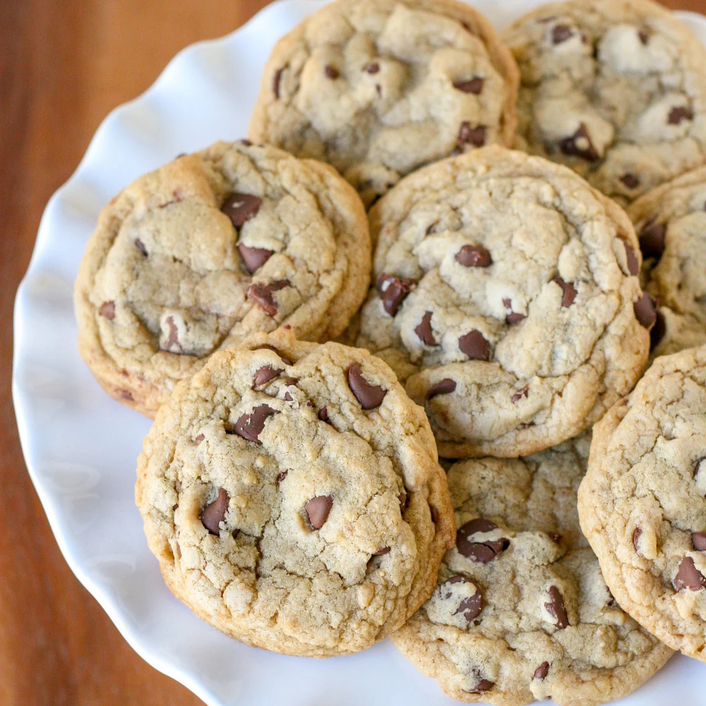

Chocolate Chip Cookies

Description
Chocolate chip cookies are far and away America’s favorite cookie.
And I totally understand why! That chewy, chocolatey goodness is
too much for me to resist too!
There seem to be a couple of camps of people when it comes to their
chocolate chip cookies: those who like them crisp and crunchy or
those who like them soft and chewy. Me? I call firmly into the soft
and chewy category with one small exception. I want my cookies to be
slightly crisp around the outside edges but soft and chewy in the middle.
With all the chocolate chip cookie recipes on the internet, they usually
fall into one camp or the other. I like to be right in the middle. The
best of both worlds.
Ingredients
- 1 3/4 cups all purpose flour
- 1/2 teaspoon baking soda
- 1 teaspoon salt
- 12 tablespoons unsalted butter, melted
- 3/4 cup dark brown sugar, packed
- 1/2 cup sugar
- 1 egg
- 1 egg yolk
- 2 teaspoons vanilla extract
- 1 1/2 cups semi sweet chocolate chips
- 3/4 cup chopped walnuts or pecans, optional
Steps
- In one large bowl add flour, baking soda and salt and set aside.
- Melt the butter, then add to another large bowl, or the bowl of an electric mixer.
- Blend melted butter with both sugars, and beat (or stir vigorously by hand) until the
butter and sugars are well combined and the mixture is smooth and shiny.
- Add the egg, then the egg yolk, and continue to beat until fully incorporated.
- Add vanilla and blend well.
- Pour flour mixture slowly into the mixer, then the chocolate chips (and nuts if
desired), and blend just until all the flour is incorporated.
- Preheat oven to 350*F and move the bowl of cookie dough to the fridge for 10-15 minutes
(while the oven heats up).
- Line 2 baking sheets with parchment paper.
- Scoop the batter (using a 2 tablespoon cookie scoop) onto the parchment paper lined
baking sheets. If the dough is too soft, move the entire baking sheet (with the cookie
dough on it) to the fridge for an additional 10-15 minutes. The cookie dough should be
somewhat firm before baking, or the cookies will turn out very flat.
- Bake cookies, one baking sheet at a time for 10-12 minutes (I usually bake mine
for 10 minutes).
- Remove the cookies from the oven when the edges of the cookies are just BEGINNING to get
golden brown, and the centers of the cookies appear slightly under-baked.
- Allow the cookies to cool about 5 minutes on the baking sheets, and they will continue to
cook, and firm up. Once partially cooled, carefully transfer cookies to a cooling rack.
- Keep the remainder of the dough in the fridge while you are baking the others. Keeping the
dough cool will help the cookies keep their shape while baking.